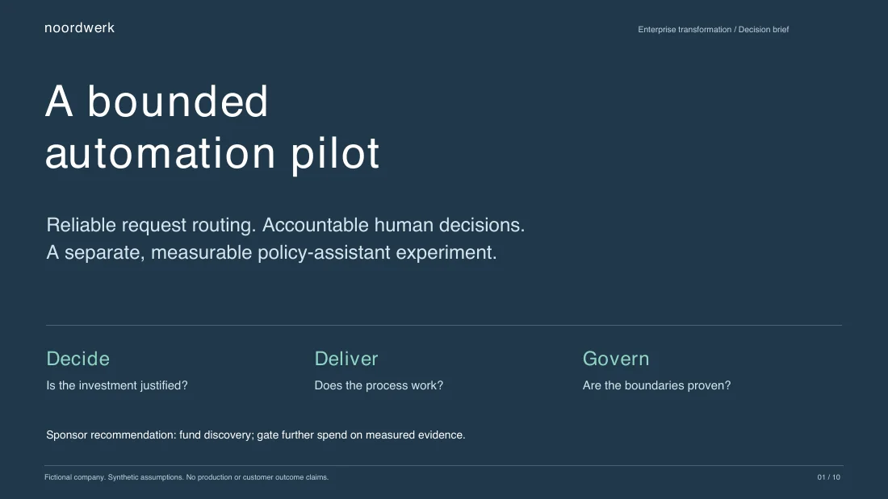
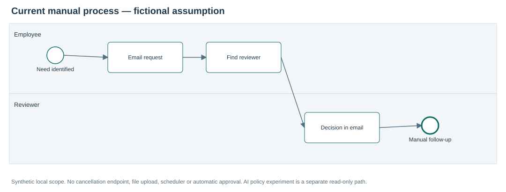
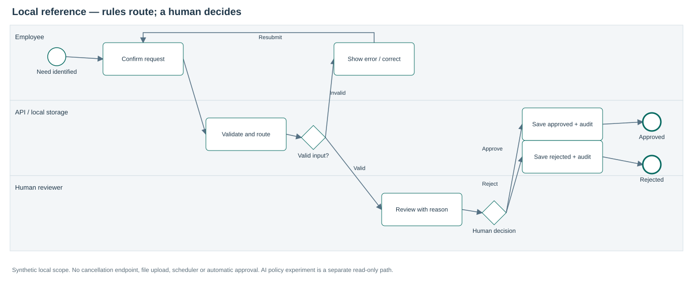
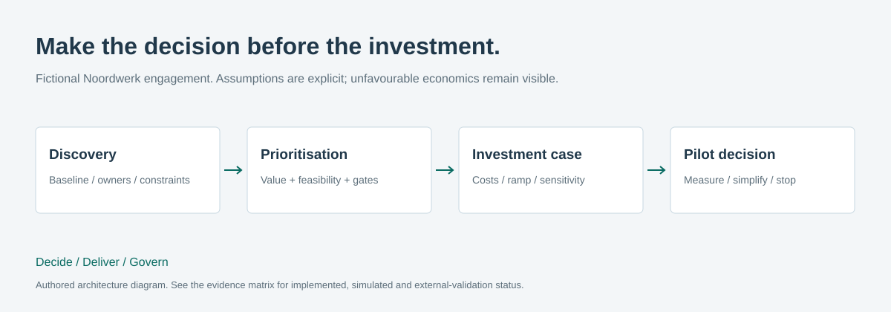

The honest answer was: start with rules, not AI.
Noordwerk wanted to know whether software and AI would pay off for material, expense and access requests that arrive by e-mail. The analysis recommends a bounded rules-only pilot, a separate policy-agent experiment, and explicit conditions for scaling or stopping, because year one is negative even under reasonable assumptions.

Why it exists
Most AI proposals skip the question of whether it pays.
A vendor demo becomes a rollout plan. The business case counts released hours as cash, assumes everyone adopts on day one, and puts an attractive but unsafe use case at the top of the list.
Facts, assumptions and decisions are separated in discovery. Hard gates reject use cases without an owner, data permission or acceptable risk. The investment case separates capacity from realised value, models an adoption ramp, and the recommendation says when to stop.
Try it · runs in your browser
Explore the investment case
The monthly output of financial_model.py (output/investment-case.json). Hover the curve for each month, and read the sensitivity grid: only high adoption with low running cost turns year one positive.
Fictional budgeting allowances, not vendor quotes, current Microsoft prices or measured results. Released hours are valued at half for realised benefit; the model is reproducible with make verify.
How it works
The engagement, step by step
Discovery
A workshop and client brief that separate facts from assumptions, and confirm owner, baseline, data rights and scope.
Options and risk
E-mail improvement, rules, Power Platform and AI compared in a decision brief with a risk register.
Gated prioritisation
Deterministic scoring of value, feasibility and readiness; hard gates block unsafe cases whatever their score.
Delivery and adoption
A gated roadmap, RACI, KPIs and a training plan with accountable exit criteria.
The flow, step by step
Screens
What it looks like
Process and method diagrams; the BPMN sources are in process/.



Evidence
What is real, and what is not
REAL Built and verified
- Reproducible scoring and financial model with checks in CI
- A rendered ten-page executive brief, BPMN models and a working Automation Hub
- A separate agent experiment that openly fails its quality gates
SIMULATED Mocked or not built yet
- Noordwerk, its workshops, people and numbers are fictional
- No real engagement, deployment or realised saving is claimed
- Costs are budgeting allowances, not quotes
Run it yourself
Run it locally
Python 3.11+ and Make; no third-party runtime dependencies.
git clone https://github.com/phlppgdfry/ai-transformation-consulting-playbook
cd ai-transformation-consulting-playbook
make verify
python3 playbook.py
python3 financial_model.py --output /tmp/investment-case.json